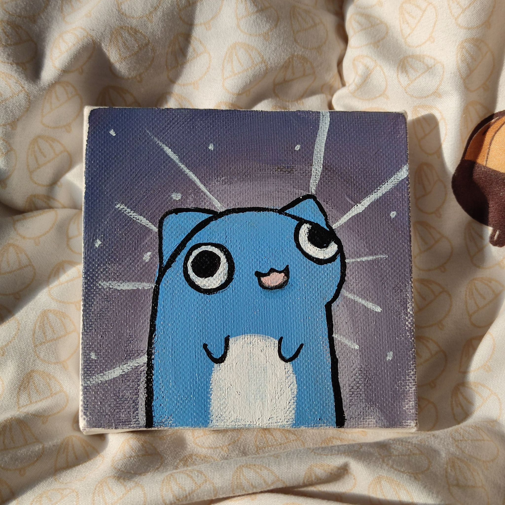
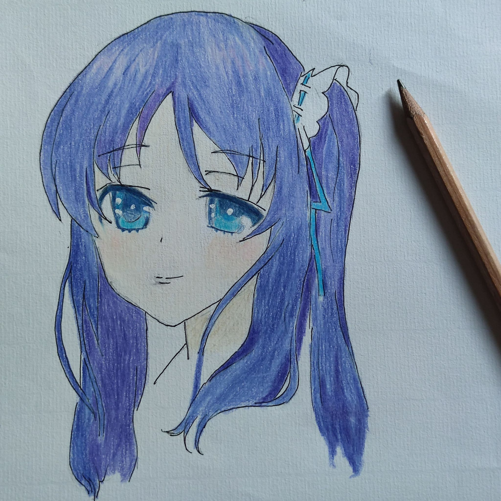
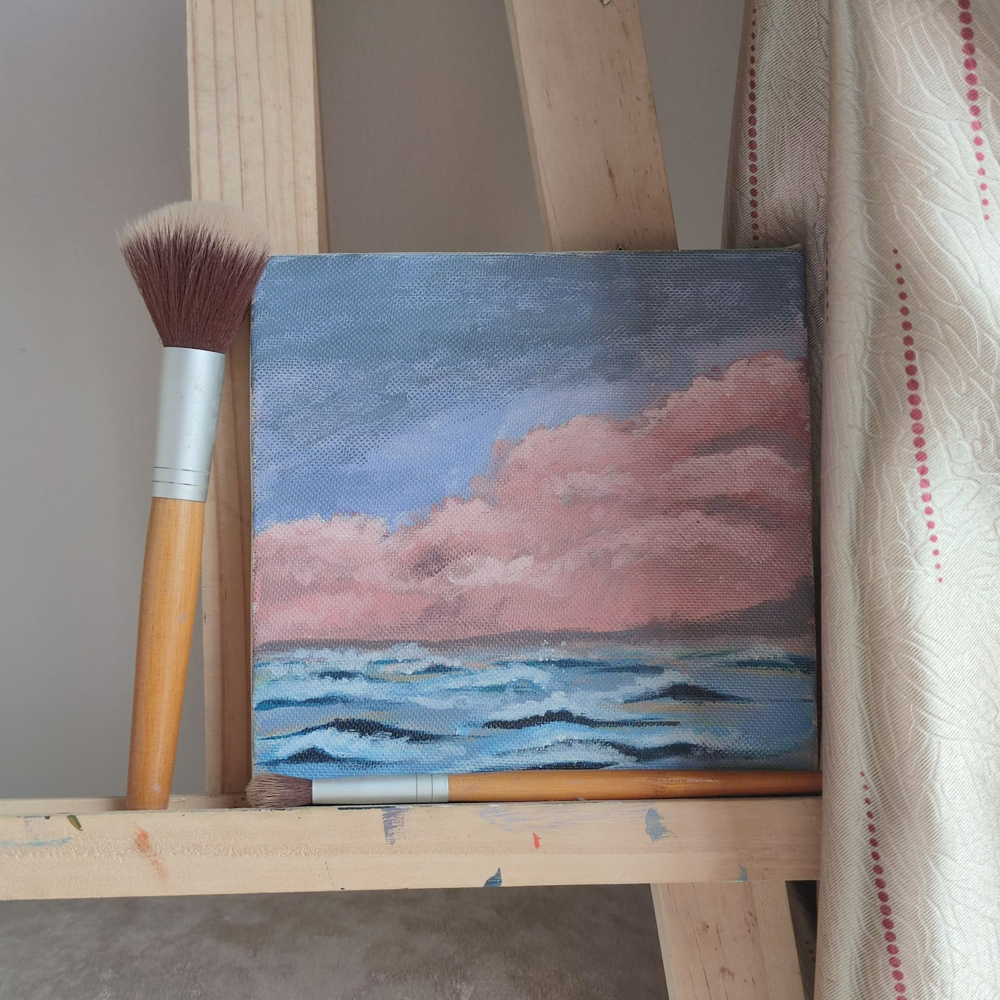
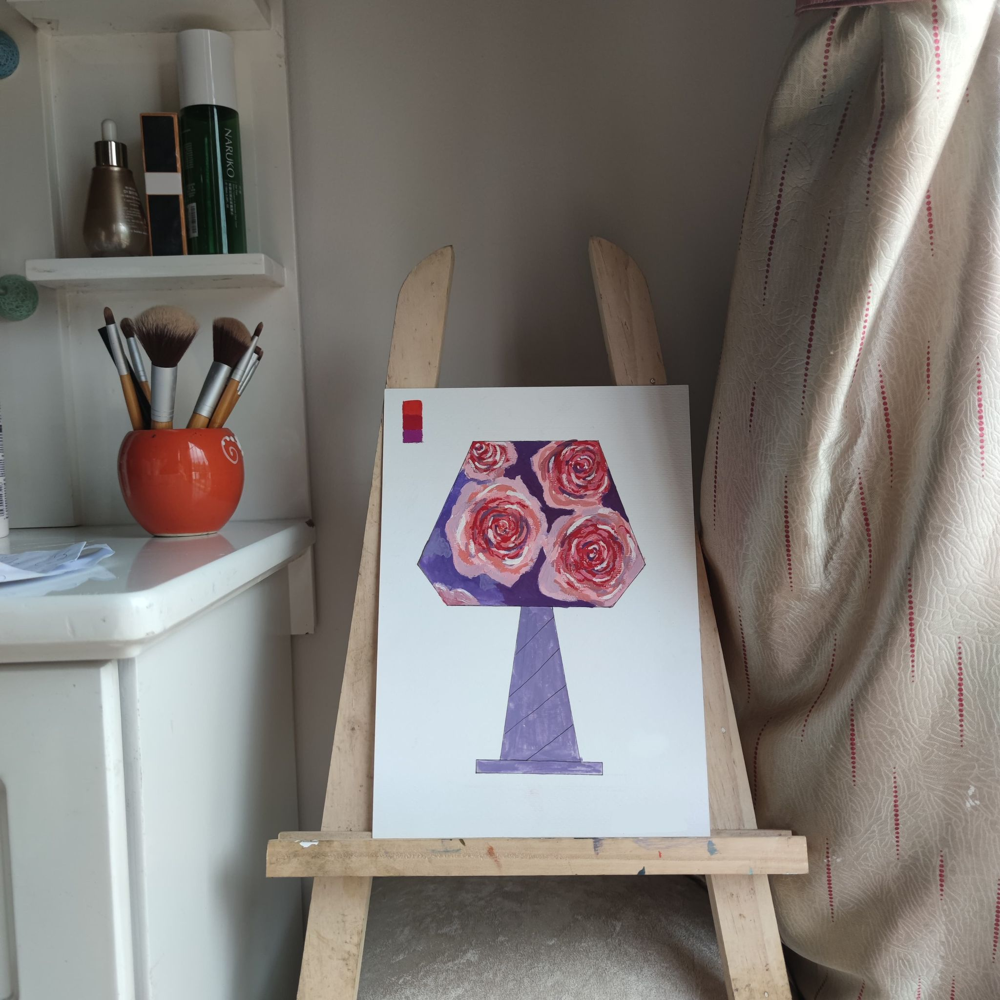
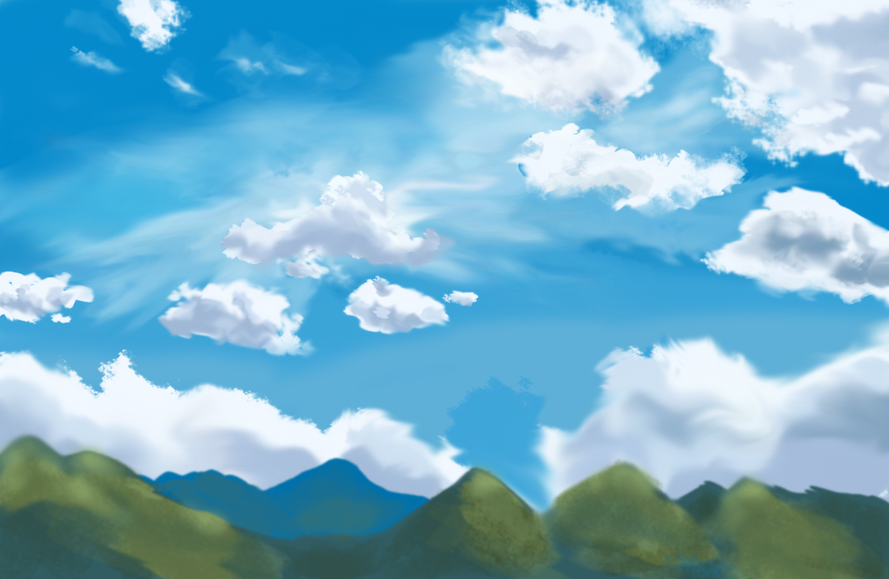
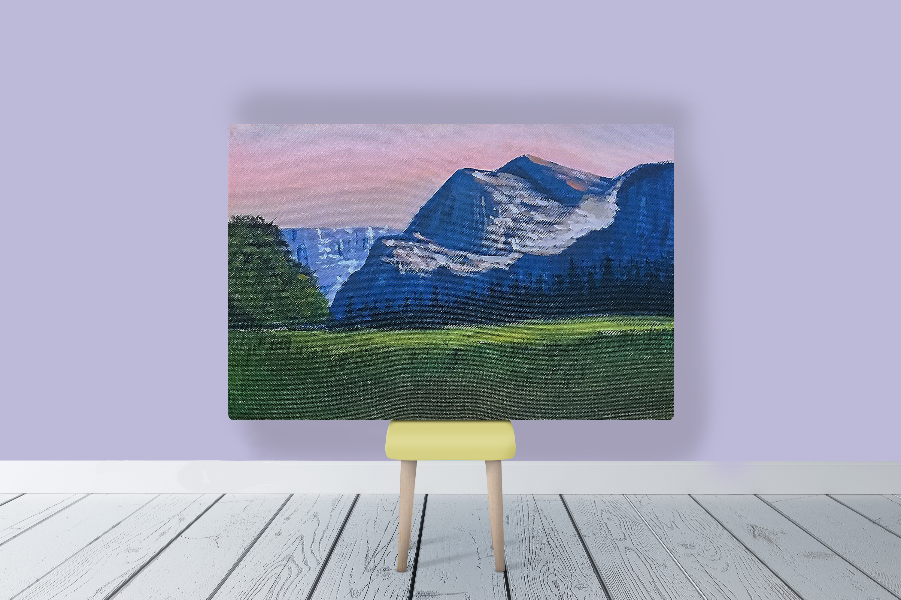
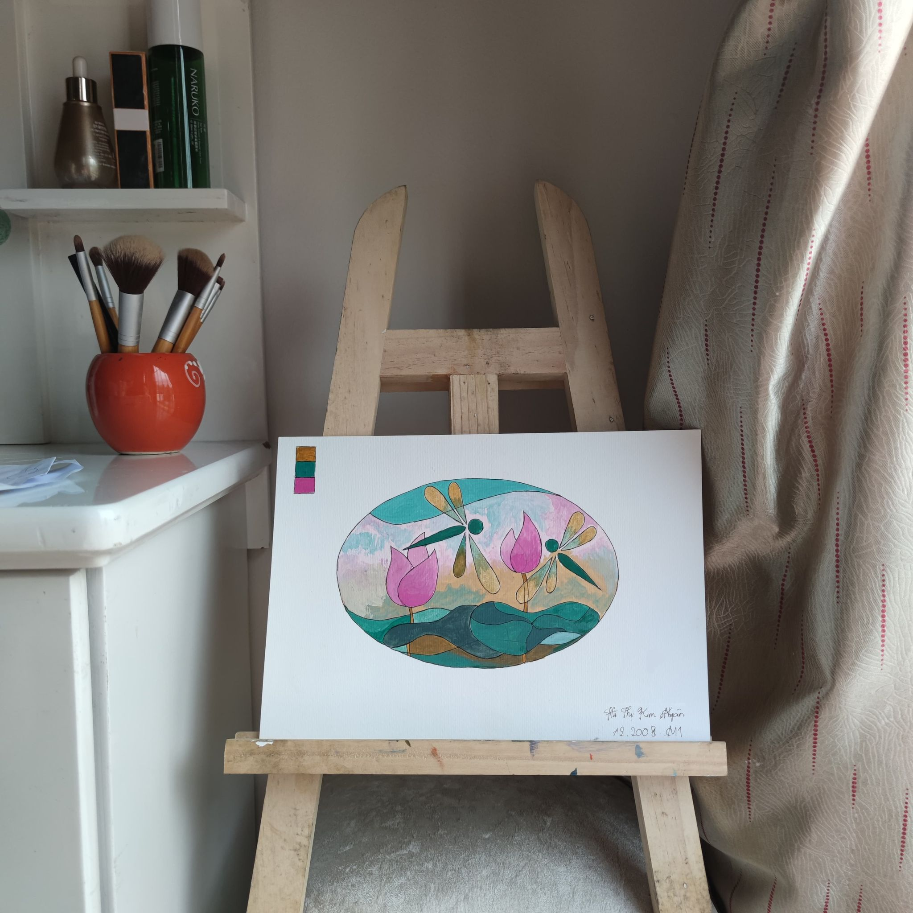

HOME
ABOUT ME
BLOG
GALLERY
CONTACT
PAINTING

Retarded Cat
Material : Acrylic
Duration : 1h30m
Winter in jungle
Material : Acrylic
Duration : 5h
Couple of cat watching
shooting stars
Material : Acrylic
Duration : 3h

Chitose
Material : Colored Pencils
Duration : 45m
Dearclops and Catcoon
Material : Acrylic
Duration : 1h30m

Atlantic
Material : Acrylic
Duration : 2h

Roseslamp
Material : Acrylic
Duration : 3h

Cloud and Moutain
Digital Painting
Duration : 3h

Tranquil Field
Material : Acrylic
Duration : 4h30m

Stylized Dragonfly
Material : Acrylic
Duration : 1h
Charlotte
Material : Acrylic
Duration : 4h
Potrait
Material : Colored pencils
Duration : 2h
1
2
To my mind a picture should be something pleasant, cheerful and pretty. There are too many unpleasant things in life as it is without creating still more of them.
Pierre-Auguste Renoir